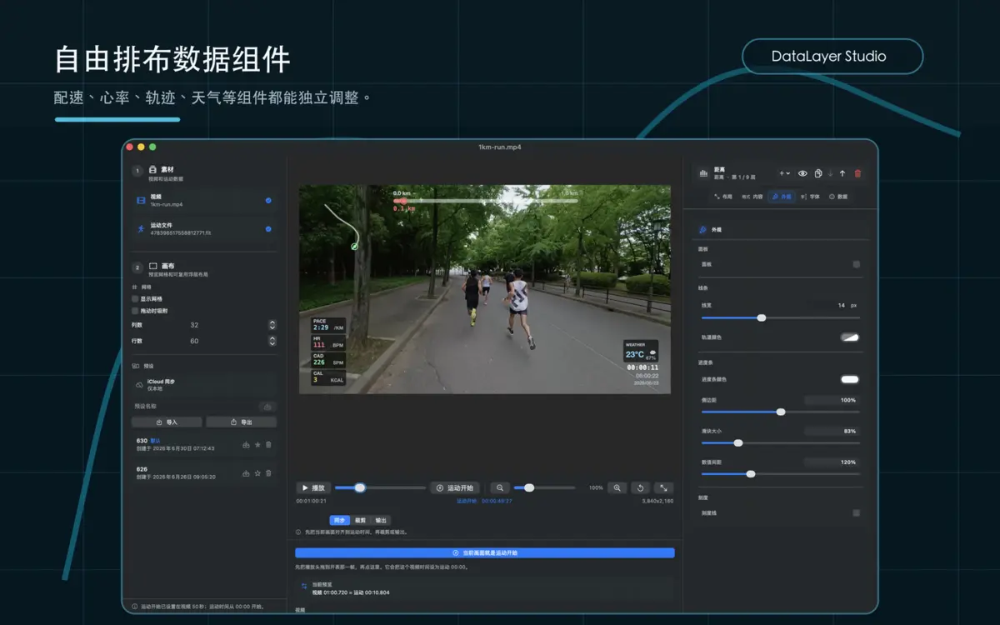
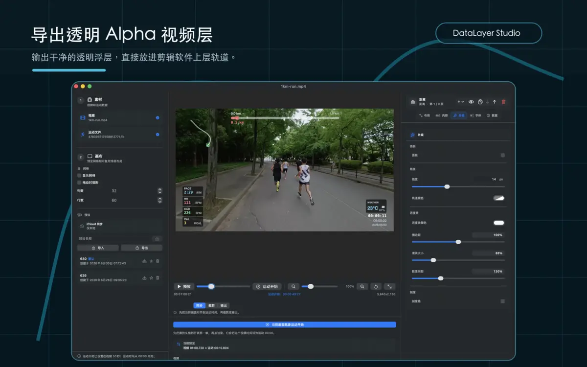

使用你的跑步素材。建议先用原始横屏或竖屏视频，避免先裁切到奇怪比例。
使用说明
用 DataLayer Studio 做一条跑步数据层视频
准备一段运动视频和对应的 FIT/GPX 文件，完成时间同步、数据层排布和导出。 这页只保留最常用流程，适合第一次上手。
快速开始
先准备两个文件
视频提供画面、分辨率和时长；FIT/GPX 提供路线、配速、心率、步频、距离和时间等运动数据。
从运动手表或运动平台导出。FIT 数据通常更完整，GPX 适合路线和基础时间数据。
找一个能判断“开始跑”的画面，例如起跑、手表开始、经过明显路标。
01
导入素材并校准时间
- 在左侧素材区选择视频和 FIT/GPX 文件。
- 播放或拖动时间线，找到视频里的运动开始画面。
- 点击“当前画面就是运动开始”，让视频时间对齐 FIT elapsed 0。
- 播放几秒确认配速、距离和路线变化是否跟画面一致。
如果视频不是从起跑开始，可以用同步点或偏移继续微调。
02
排布你需要的数据层
- 在画布中选中配速、心率、距离、路线、天气等组件。
- 直接拖动组件到合适位置，必要时开启网格和吸附。
- 在右侧检查器调整颜色、字号、透明度、线宽和显示内容。
- 满意后保存为预设，下次可以直接复用。

效果确认
确认观众能读懂运动
导出前切回预览，看数据层是否避开主体人物、字幕和重要画面。需要时只保留最有用的数据。

03
透明 Alpha 浮层
合成视频
选择导出方式
适合 Final Cut Pro、DaVinci Resolve、Premiere。把导出的 MOV 放到原视频上层轨道。
适合快速分享。DataLayer Studio 会把原视频、音频和数据层一起输出。

批量制作
用 CLI 复用同一套布局
已经在图形界面保存过布局预设后，可以用命令行给多段视频生成一致的数据层。
swift run overlay \
--video /path/to/run-video.mov \
--fit /path/to/activity.fit \
--output /path/to/overlay.mov \
--layout-preset "Race Layout" \
--export-mode overlay常见问题
先检查这几项
数据和画面对不上
重新找一个清楚的同步点。视频如果提前录制，通常需要把运动开始点往后对齐。
导出的透明视频看起来是黑底
多数播放器不会正确显示 Alpha。把 MOV 放进剪辑软件的上层轨道检查。
画面里数据太多
优先保留路线、配速、心率、距离进度。训练复盘可以多一些，短视频建议少一些。
想给很多视频套同样样式
先在 GUI 保存预设，再用 CLI 的 --layout-preset 批量导出。